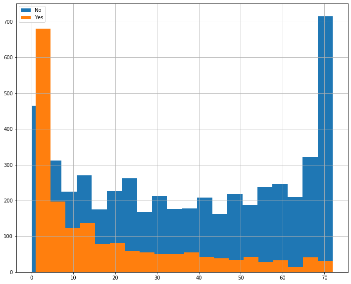
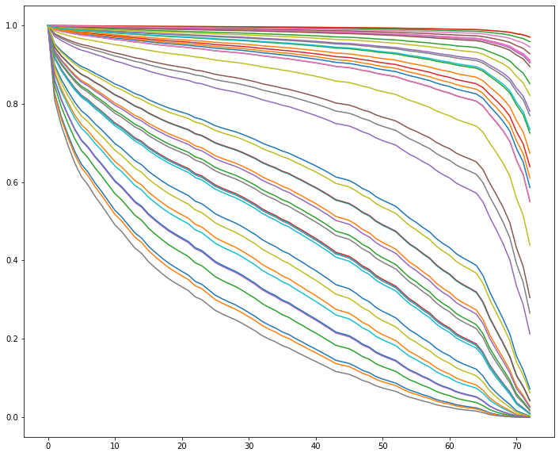
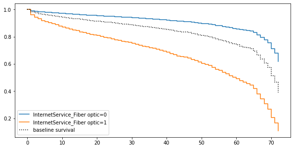
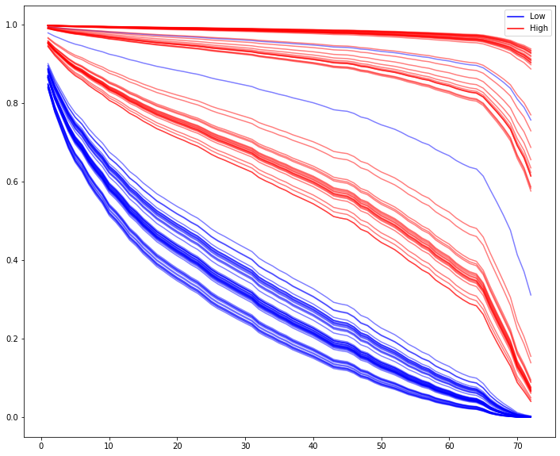
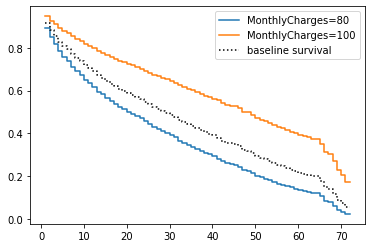
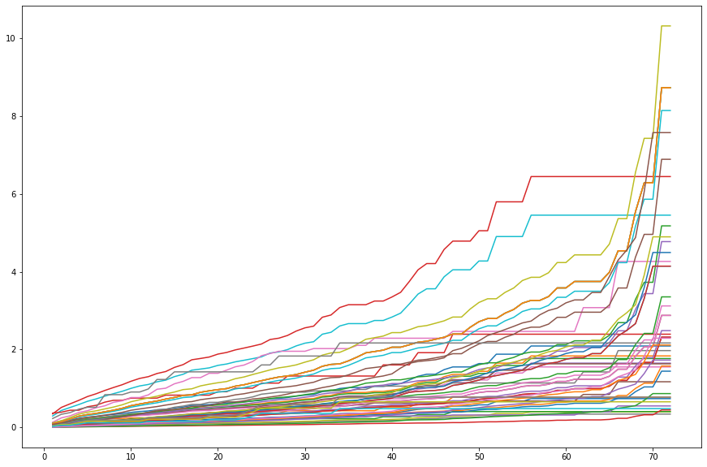
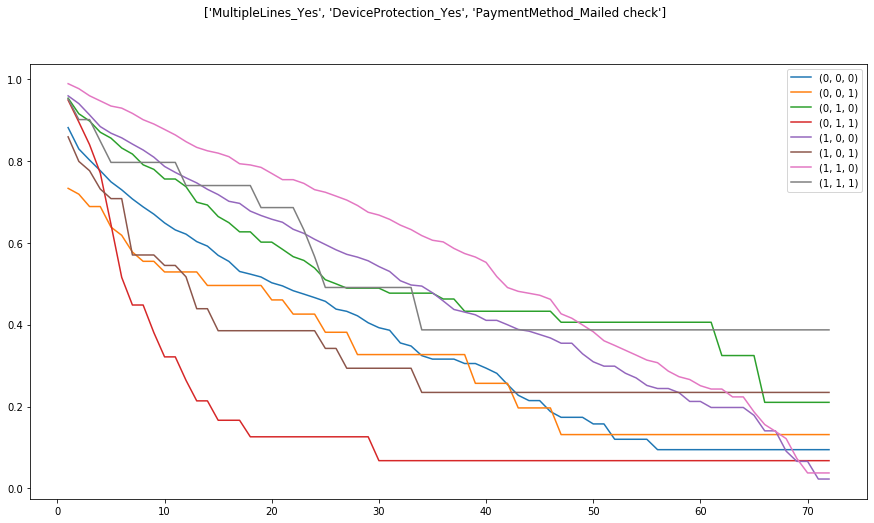

Cox Modeling Using Lifelines
Extending from our notebook on the math and intuition behind the Cox Model let’s do a practical example using real data.
The Data
We’ll use the Telco Customer Churn dataset on Kaggle, which is basically a bunch of client records for a telecom company, where the goal is to predict churn (Churn) and the duration it takes for churn to happen (tenure).
%pylab inline
import pandas as pdPopulating the interactive namespace from numpy and matplotlib
Lot of potentially-useful information here, this notebook does a particularly good job exploring the data.
df = pd.read_csv('https://raw.githubusercontent.com/'
'treselle-systems/customer_churn_analysis/'
'master/WA_Fn-UseC_-Telco-Customer-Churn.csv')
df.head().T| 0 | 1 | 2 | 3 | 4 | |
|---|---|---|---|---|---|
| customerID | 7590-VHVEG | 5575-GNVDE | 3668-QPYBK | 7795-CFOCW | 9237-HQITU |
| gender | Female | Male | Male | Male | Female |
| SeniorCitizen | 0 | 0 | 0 | 0 | 0 |
| Partner | Yes | No | No | No | No |
| Dependents | No | No | No | No | No |
| tenure | 1 | 34 | 2 | 45 | 2 |
| PhoneService | No | Yes | Yes | No | Yes |
| MultipleLines | No phone service | No | No | No phone service | No |
| InternetService | DSL | DSL | DSL | DSL | Fiber optic |
| OnlineSecurity | No | Yes | Yes | Yes | No |
| OnlineBackup | Yes | No | Yes | No | No |
| DeviceProtection | No | Yes | No | Yes | No |
| TechSupport | No | No | No | Yes | No |
| StreamingTV | No | No | No | No | No |
| StreamingMovies | No | No | No | No | No |
| Contract | Month-to-month | One year | Month-to-month | One year | Month-to-month |
| PaperlessBilling | Yes | No | Yes | No | Yes |
| PaymentMethod | Electronic check | Mailed check | Mailed check | Bank transfer (automatic) | Electronic check |
| MonthlyCharges | 29.85 | 56.95 | 53.85 | 42.3 | 70.7 |
| TotalCharges | 29.85 | 1889.5 | 108.15 | 1840.75 | 151.65 |
| Churn | No | No | Yes | No | Yes |
There’s about a 3-1 split between churn and not churn
df['Churn'].value_counts() / len(df)No 0.73463
Yes 0.26537
Name: Churn, dtype: float64
And the difference in tenure distribution between the two is pretty stark– lot of right-censored data in our No group.
fig, ax = plt.subplots(figsize=(12, 10))
for idx, group in df.groupby('Churn'):
group['tenure'].hist(ax=ax, bins=20, label=idx)
ax.legend();
There’s a lot more here than is illustrative to use, so let’s pare down this dataset a bit.
First, we’ll move customerID into the index as well as drop the TotalCharges variables, as there’s an obvious, uninformative, colinearity between that and tenure.
simple = df.set_index('customerID', drop=True)
simple = simple.drop('TotalCharges', axis=1)We’ll keep the numeric tenure and MonthlyCharges columns, but here, I’m narrowing down to categorical features that I think might be useful, then dummy-ing them for model consumption.
simple = pd.get_dummies(simple,
columns=['gender', 'SeniorCitizen', 'InternetService',
'Contract', 'PaymentMethod', 'Churn'],
drop_first=True).select_dtypes('number')
simple.head().T| customerID | 7590-VHVEG | 5575-GNVDE | 3668-QPYBK | 7795-CFOCW | 9237-HQITU |
|---|---|---|---|---|---|
| tenure | 1.00 | 34.00 | 2.00 | 45.0 | 2.0 |
| MonthlyCharges | 29.85 | 56.95 | 53.85 | 42.3 | 70.7 |
| gender_Male | 0.00 | 1.00 | 1.00 | 1.0 | 0.0 |
| SeniorCitizen_1 | 0.00 | 0.00 | 0.00 | 0.0 | 0.0 |
| InternetService_Fiber optic | 0.00 | 0.00 | 0.00 | 0.0 | 1.0 |
| InternetService_No | 0.00 | 0.00 | 0.00 | 0.0 | 0.0 |
| Contract_One year | 0.00 | 1.00 | 0.00 | 1.0 | 0.0 |
| Contract_Two year | 0.00 | 0.00 | 0.00 | 0.0 | 0.0 |
| PaymentMethod_Credit card (automatic) | 0.00 | 0.00 | 0.00 | 0.0 | 0.0 |
| PaymentMethod_Electronic check | 1.00 | 0.00 | 0.00 | 0.0 | 1.0 |
| PaymentMethod_Mailed check | 0.00 | 1.00 | 1.00 | 0.0 | 0.0 |
| Churn_Yes | 0.00 | 0.00 | 1.00 | 0.0 | 1.0 |
Printing some simple statistics, a few things stand out:
- The gender breakup is about 50⁄50
- About a third of the pop has DSL internet
- Over half of the userbase is going month-to-month
simple.describe().T| count | mean | std | min | 25% | 50% | 75% | max | |
|---|---|---|---|---|---|---|---|---|
| tenure | 7043.0 | 32.371149 | 24.559481 | 0.00 | 9.0 | 29.00 | 55.00 | 72.00 |
| MonthlyCharges | 7043.0 | 64.761692 | 30.090047 | 18.25 | 35.5 | 70.35 | 89.85 | 118.75 |
| gender_Male | 7043.0 | 0.504756 | 0.500013 | 0.00 | 0.0 | 1.00 | 1.00 | 1.00 |
| SeniorCitizen_1 | 7043.0 | 0.162147 | 0.368612 | 0.00 | 0.0 | 0.00 | 0.00 | 1.00 |
| InternetService_Fiber optic | 7043.0 | 0.439585 | 0.496372 | 0.00 | 0.0 | 0.00 | 1.00 | 1.00 |
| InternetService_No | 7043.0 | 0.216669 | 0.412004 | 0.00 | 0.0 | 0.00 | 0.00 | 1.00 |
| Contract_One year | 7043.0 | 0.209144 | 0.406726 | 0.00 | 0.0 | 0.00 | 0.00 | 1.00 |
| Contract_Two year | 7043.0 | 0.240664 | 0.427517 | 0.00 | 0.0 | 0.00 | 0.00 | 1.00 |
| PaymentMethod_Credit card (automatic) | 7043.0 | 0.216101 | 0.411613 | 0.00 | 0.0 | 0.00 | 0.00 | 1.00 |
| PaymentMethod_Electronic check | 7043.0 | 0.335794 | 0.472301 | 0.00 | 0.0 | 0.00 | 1.00 | 1.00 |
| PaymentMethod_Mailed check | 7043.0 | 0.228880 | 0.420141 | 0.00 | 0.0 | 0.00 | 0.00 | 1.00 |
| Churn_Yes | 7043.0 | 0.265370 | 0.441561 | 0.00 | 0.0 | 0.00 | 1.00 | 1.00 |
Fitting a Model
So if we take what we’ve got and fit a simple model to it, we can get an easy glimpse at the significance of our features in the p column.
from lifelines import CoxPHFitter
cph = CoxPHFitter().fit(simple, 'tenure', 'Churn_Yes')
cph.print_summary()| model | lifelines.CoxPHFitter |
|---|---|
| duration col | 'tenure' |
| event col | 'Churn_Yes' |
| baseline estimation | breslow |
| number of observations | 7043 |
| number of events observed | 1869 |
| partial log-likelihood | -14102.86 |
| time fit was run | 2020-04-06 19:34:49 UTC |
| coef | exp(coef) | se(coef) | coef lower 95% | coef upper 95% | exp(coef) lower 95% | exp(coef) upper 95% | z | p | -log2(p) | |
|---|---|---|---|---|---|---|---|---|---|---|
| MonthlyCharges | -0.03 | 0.97 | 0.00 | -0.04 | -0.03 | 0.96 | 0.97 | -15.20 | <0.005 | 170.86 |
| gender_Male | -0.09 | 0.91 | 0.05 | -0.18 | 0.00 | 0.84 | 1.00 | -1.92 | 0.05 | 4.19 |
| SeniorCitizen_1 | -0.09 | 0.92 | 0.05 | -0.19 | 0.02 | 0.82 | 1.02 | -1.57 | 0.12 | 3.11 |
| InternetService_Fiber optic | 1.54 | 4.66 | 0.10 | 1.34 | 1.74 | 3.82 | 5.68 | 15.22 | <0.005 | 171.46 |
| InternetService_No | -1.35 | 0.26 | 0.12 | -1.59 | -1.11 | 0.20 | 0.33 | -10.91 | <0.005 | 89.58 |
| Contract_One year | -1.78 | 0.17 | 0.09 | -1.95 | -1.61 | 0.14 | 0.20 | -20.50 | <0.005 | 307.77 |
| Contract_Two year | -3.52 | 0.03 | 0.16 | -3.84 | -3.20 | 0.02 | 0.04 | -21.71 | <0.005 | 344.74 |
| PaymentMethod_Credit card (automatic) | -0.02 | 0.98 | 0.09 | -0.20 | 0.16 | 0.82 | 1.17 | -0.22 | 0.82 | 0.28 |
| PaymentMethod_Electronic check | 0.71 | 2.03 | 0.07 | 0.57 | 0.84 | 1.76 | 2.33 | 9.99 | <0.005 | 75.70 |
| PaymentMethod_Mailed check | 0.69 | 2.00 | 0.09 | 0.52 | 0.87 | 1.69 | 2.38 | 7.91 | <0.005 | 48.48 |
| Concordance | 0.84 |
|---|---|
| Log-likelihood ratio test | 3100.35 on 10 df |
| -log2(p) of ll-ratio test | inf |
I was negative-surprised to see that the Electronic Check and Mailed Check payment methods led to a significant dip in the Surival Curve– me and my Planet Fitness membership are all too familiar with the “out of sight, out of mind” business model. Credit card (automatic), on the other hand, is not significant, because the 4th payment method is Bank transfer (automatic), which basically achieves the same thing
df['PaymentMethod'].value_counts()Electronic check 2365
Mailed check 1612
Bank transfer (automatic) 1544
Credit card (automatic) 1522
Name: PaymentMethod, dtype: int64
Plotting
Of course, we can use the model and records from our dataset to predict the Survival Curve
sample = simple.sample(50, random_state=12)
cph.predict_survival_function(sample).plot(figsize=(12, 10),
legend=False);
Additionally, we can use plot_covariate_groups() to hold everything equal, save for one attribute, then examine the relative effects of different values on the population.
Here, we can see that having fiber internet tends to make users churn faster.
cph.plot_covariate_groups('InternetService_Fiber optic',
values=[0, 1],
figsize=(10, 5));
But why do you suppose that is?
Comparing Two Populations
My immediate hypothesis is that it’s got something to do with how the client has to pay. Indeed, at all levels of contract, someone with fiber internet pays more. So it could be a fiber thing, or could be a money thing.
simple.groupby(['Contract_Two year', 'Contract_One year',
'InternetService_Fiber optic'])['MonthlyCharges'].agg(['mean', 'std'])| mean | std | |||
|---|---|---|---|---|
| Contract_Two year | Contract_One year | InternetService_Fiber optic | ||
| 0 | 0 | 0 | 41.278220 | 17.499133 |
| 1 | 87.021194 | 11.198021 | ||
| 1 | 0 | 45.582923 | 22.638256 | |
| 1 | 98.779499 | 9.349157 | ||
| 1 | 0 | 0 | 45.927883 | 26.633123 |
| 1 | 104.571445 | 9.422629 |
Let’s pare down to just Fiber users to do some investigation.
fiber = simple[simple['InternetService_Fiber optic'] == 1]
fiber = fiber[['tenure', 'Contract_One year',
'Contract_Two year', 'MonthlyCharges',
'gender_Male', 'Churn_Yes']]cph = CoxPHFitter().fit(fiber, 'tenure', 'Churn_Yes')
cph.print_summary()| model | lifelines.CoxPHFitter |
|---|---|
| duration col | 'tenure' |
| event col | 'Churn_Yes' |
| baseline estimation | breslow |
| number of observations | 3096 |
| number of events observed | 1297 |
| partial log-likelihood | -9055.07 |
| time fit was run | 2020-04-06 19:34:49 UTC |
| coef | exp(coef) | se(coef) | coef lower 95% | coef upper 95% | exp(coef) lower 95% | exp(coef) upper 95% | z | p | -log2(p) | |
|---|---|---|---|---|---|---|---|---|---|---|
| Contract_One year | -1.76 | 0.17 | 0.11 | -1.97 | -1.54 | 0.14 | 0.21 | -16.26 | <0.005 | 195.06 |
| Contract_Two year | -3.21 | 0.04 | 0.20 | -3.59 | -2.82 | 0.03 | 0.06 | -16.22 | <0.005 | 194.20 |
| MonthlyCharges | -0.04 | 0.96 | 0.00 | -0.04 | -0.03 | 0.96 | 0.97 | -13.61 | <0.005 | 137.72 |
| gender_Male | -0.14 | 0.87 | 0.06 | -0.25 | -0.03 | 0.78 | 0.97 | -2.50 | 0.01 | 6.33 |
| Concordance | 0.79 |
|---|---|
| Log-likelihood ratio test | 1361.51 on 4 df |
| -log2(p) of ll-ratio test | 972.71 |
Actually, it looks like having a higher monthly charge means you’re more likely to stick around.
seed = 42
low = fiber[fiber['MonthlyCharges'] < 80].sample(50, random_state=seed)
hi = fiber[fiber['MonthlyCharges'] > 100].sample(50, random_state=seed)Well that’s odd.
fig, ax = plt.subplots(figsize=(12, 10))
cph.predict_survival_function(low).plot(ax=ax, c='b', alpha=.5, legend=False)
cph.predict_survival_function(hi).plot(ax=ax, c='r', alpha=.5, legend=False);
from matplotlib.lines import Line2D
custom_lines = [Line2D([0], [0], color='b'),
Line2D([0], [0], color='r')]
ax.legend(custom_lines, ['Low', 'High']);
It’s obvious visually, but if we wanted to say with statistical confidence that the high and low paying populations had different survival curve distributions, we could do so via the built-in logrank_test()
from lifelines.statistics import logrank_test
results = logrank_test(low['tenure'], hi['tenure'],
event_observed_A=low['Churn_Yes'],
event_observed_B=hi['Churn_Yes'])
results.print_summary()| t_0 | -1 |
|---|---|
| null_distribution | chi squared |
| degrees_of_freedom | 1 |
| test_name | logrank_test |
| test_statistic | p | |
|---|---|---|
| 0 | 21.90 | <0.005 |
| tenure | MonthlyCharges | gender_Male | Churn_Yes | |
|---|---|---|---|---|
| customerID | ||||
| 9237-HQITU | 2 | 70.70 | 0 | 1 |
| 9305-CDSKC | 8 | 99.65 | 0 | 1 |
| 1452-KIOVK | 22 | 89.10 | 1 | 0 |
| 7892-POOKP | 28 | 104.80 | 0 | 1 |
| 0280-XJGEX | 49 | 103.70 | 1 | 1 |
Here’s a screengrab of the code. I’m tired of fighting with LaTex.
Image('images/i_hate_latex.PNG')
Re-fit and…
cph = CoxPHFitter()
cph.fit(m2m, duration_col='tenure', event_col='Churn_Yes')
cph.print_summary()| model | lifelines.CoxPHFitter |
|---|---|
| duration col | 'tenure' |
| event col | 'Churn_Yes' |
| baseline estimation | breslow |
| number of observations | 2128 |
| number of events observed | 1162 |
| partial log-likelihood | -7955.78 |
| time fit was run | 2020-04-06 19:34:50 UTC |
| coef | exp(coef) | se(coef) | coef lower 95% | coef upper 95% | exp(coef) lower 95% | exp(coef) upper 95% | z | p | -log2(p) | |
|---|---|---|---|---|---|---|---|---|---|---|
| MonthlyCharges | -0.04 | 0.96 | 0.00 | -0.04 | -0.03 | 0.96 | 0.97 | -13.63 | <0.005 | 138.14 |
| gender_Male | -0.15 | 0.86 | 0.06 | -0.26 | -0.03 | 0.77 | 0.97 | -2.50 | 0.01 | 6.33 |
| Concordance | 0.65 |
|---|---|
| Log-likelihood ratio test | 195.83 on 2 df |
| -log2(p) of ll-ratio test | 141.26 |
Damn it.
cph.plot_covariate_groups('MonthlyCharges', values=[80, 100])<matplotlib.axes._subplots.AxesSubplot at 0x1d3611169b0>

Starting Over
So there’s obviously more at play here than just MonthlyCharges.
Let’s re-pull our original dataset with all of the features, but only for records that are going month-to-month on Fiber internet
m2m_index = m2m.index
a = df.set_index('customerID')
b = a.loc[m2m_index].drop('TotalCharges', axis=1)
c = pd.get_dummies(b, drop_first=True)
m2m_wide = cOf course, fitting the model with everything but the kitchen sink yields us more than we need.
cph = CoxPHFitter()
cph.fit(m2m_wide, duration_col='tenure', event_col='Churn_Yes')
cph.print_summary()| model | lifelines.CoxPHFitter |
|---|---|
| duration col | 'tenure' |
| event col | 'Churn_Yes' |
| baseline estimation | breslow |
| number of observations | 2128 |
| number of events observed | 1162 |
| partial log-likelihood | -7757.37 |
| time fit was run | 2020-04-06 19:34:50 UTC |
| coef | exp(coef) | se(coef) | coef lower 95% | coef upper 95% | exp(coef) lower 95% | exp(coef) upper 95% | z | p | -log2(p) | |
|---|---|---|---|---|---|---|---|---|---|---|
| SeniorCitizen | -0.11 | 0.90 | 0.07 | -0.24 | 0.02 | 0.79 | 1.02 | -1.64 | 0.10 | 3.32 |
| MonthlyCharges | -0.00 | 1.00 | 0.03 | -0.06 | 0.05 | 0.95 | 1.06 | -0.02 | 0.98 | 0.03 |
| gender_Male | -0.17 | 0.85 | 0.06 | -0.28 | -0.05 | 0.75 | 0.95 | -2.79 | 0.01 | 7.57 |
| Partner_Yes | -0.50 | 0.61 | 0.07 | -0.64 | -0.37 | 0.53 | 0.69 | -7.25 | <0.005 | 41.09 |
| Dependents_Yes | -0.04 | 0.96 | 0.09 | -0.22 | 0.15 | 0.80 | 1.16 | -0.40 | 0.69 | 0.54 |
| MultipleLines_Yes | -0.46 | 0.63 | 0.15 | -0.76 | -0.16 | 0.47 | 0.85 | -3.03 | <0.005 | 8.67 |
| OnlineSecurity_Yes | -0.74 | 0.48 | 0.17 | -1.07 | -0.41 | 0.34 | 0.67 | -4.37 | <0.005 | 16.31 |
| OnlineBackup_Yes | -0.66 | 0.52 | 0.15 | -0.96 | -0.36 | 0.38 | 0.70 | -4.26 | <0.005 | 15.55 |
| DeviceProtection_Yes | -0.32 | 0.73 | 0.15 | -0.62 | -0.02 | 0.54 | 0.98 | -2.09 | 0.04 | 4.76 |
| TechSupport_Yes | -0.59 | 0.56 | 0.17 | -0.92 | -0.25 | 0.40 | 0.78 | -3.45 | <0.005 | 10.81 |
| StreamingTV_Yes | -0.02 | 0.98 | 0.29 | -0.58 | 0.55 | 0.56 | 1.73 | -0.06 | 0.95 | 0.07 |
| StreamingMovies_Yes | -0.19 | 0.83 | 0.29 | -0.75 | 0.37 | 0.47 | 1.45 | -0.66 | 0.51 | 0.98 |
| PaperlessBilling_Yes | 0.27 | 1.30 | 0.08 | 0.11 | 0.42 | 1.12 | 1.52 | 3.35 | <0.005 | 10.25 |
| PaymentMethod_Credit card (automatic) | -0.15 | 0.86 | 0.12 | -0.39 | 0.09 | 0.67 | 1.09 | -1.24 | 0.21 | 2.23 |
| PaymentMethod_Electronic check | 0.57 | 1.76 | 0.09 | 0.39 | 0.74 | 1.47 | 2.10 | 6.22 | <0.005 | 30.95 |
| PaymentMethod_Mailed check | 0.47 | 1.60 | 0.13 | 0.21 | 0.73 | 1.24 | 2.07 | 3.58 | <0.005 | 11.53 |
| Concordance | 0.73 |
|---|---|
| Log-likelihood ratio test | 592.65 on 16 df |
| -log2(p) of ll-ratio test | 382.30 |
Okay, so it looks like it’s less to do with contracts and money, and more to do with additional features. Perhaps a convincing-enough interpretation here is “if the user gets upsold on everything, they’re not probably not shopping around.”
Visually inspecting that p column again, let’s hold out all of the features that look significant and re-fit.
sig_cols = ['gender_Male', 'Partner_Yes', 'MultipleLines_Yes',
'OnlineSecurity_Yes', 'OnlineBackup_Yes', 'DeviceProtection_Yes',
'TechSupport_Yes', 'PaperlessBilling_Yes', 'PaymentMethod_Electronic check',
'PaymentMethod_Mailed check']
cph = CoxPHFitter()
cph.fit(m2m_wide[sig_cols + ['tenure', 'Churn_Yes']], duration_col='tenure', event_col='Churn_Yes')
cph.print_summary()| model | lifelines.CoxPHFitter |
|---|---|
| duration col | 'tenure' |
| event col | 'Churn_Yes' |
| baseline estimation | breslow |
| number of observations | 2128 |
| number of events observed | 1162 |
| partial log-likelihood | -7765.40 |
| time fit was run | 2020-04-06 19:34:50 UTC |
| coef | exp(coef) | se(coef) | coef lower 95% | coef upper 95% | exp(coef) lower 95% | exp(coef) upper 95% | z | p | -log2(p) | |
|---|---|---|---|---|---|---|---|---|---|---|
| gender_Male | -0.17 | 0.84 | 0.06 | -0.29 | -0.06 | 0.75 | 0.94 | -2.92 | <0.005 | 8.18 |
| Partner_Yes | -0.52 | 0.60 | 0.06 | -0.64 | -0.39 | 0.53 | 0.67 | -8.20 | <0.005 | 51.88 |
| MultipleLines_Yes | -0.49 | 0.61 | 0.06 | -0.61 | -0.37 | 0.54 | 0.69 | -7.93 | <0.005 | 48.74 |
| OnlineSecurity_Yes | -0.73 | 0.48 | 0.09 | -0.92 | -0.55 | 0.40 | 0.58 | -7.79 | <0.005 | 47.08 |
| OnlineBackup_Yes | -0.66 | 0.52 | 0.07 | -0.80 | -0.53 | 0.45 | 0.59 | -9.68 | <0.005 | 71.18 |
| DeviceProtection_Yes | -0.36 | 0.70 | 0.07 | -0.49 | -0.23 | 0.61 | 0.80 | -5.38 | <0.005 | 23.66 |
| TechSupport_Yes | -0.59 | 0.55 | 0.09 | -0.78 | -0.41 | 0.46 | 0.66 | -6.31 | <0.005 | 31.70 |
| PaperlessBilling_Yes | 0.24 | 1.27 | 0.08 | 0.08 | 0.39 | 1.09 | 1.48 | 3.01 | <0.005 | 8.60 |
| PaymentMethod_Electronic check | 0.60 | 1.83 | 0.07 | 0.46 | 0.74 | 1.59 | 2.10 | 8.49 | <0.005 | 55.47 |
| PaymentMethod_Mailed check | 0.56 | 1.75 | 0.12 | 0.33 | 0.79 | 1.39 | 2.21 | 4.75 | <0.005 | 18.88 |
| Concordance | 0.73 |
|---|---|
| Log-likelihood ratio test | 576.60 on 10 df |
| -log2(p) of ll-ratio test | 387.81 |
Check Assumptions
This looks promising. But did we make a procedural blunder in all of our data transformation?
lifelines gives us an awesome tool that we can use to simply check the Cox Model assumptions
cph.check_assumptions(training_df=m2m_wide[sig_cols + ['tenure', 'Churn_Yes']])The ``p_value_threshold`` is set at 0.01. Even under the null hypothesis of no violations, some
covariates will be below the threshold by chance. This is compounded when there are many covariates.
Similarly, when there are lots of observations, even minor deviances from the proportional hazard
assumption will be flagged.
With that in mind, it's best to use a combination of statistical tests and visual tests to determine
the most serious violations. Produce visual plots using ``check_assumptions(..., show_plots=True)``
and looking for non-constant lines. See link [A] below for a full example.
| null_distribution | chi squared |
|---|---|
| degrees_of_freedom | 1 |
| test_name | proportional_hazard_test |
| test_statistic | p | ||
|---|---|---|---|
| DeviceProtection_Yes | km | 4.88 | 0.03 |
| rank | 6.18 | 0.01 | |
| MultipleLines_Yes | km | 17.91 | <0.005 |
| rank | 19.76 | <0.005 | |
| OnlineBackup_Yes | km | 3.40 | 0.07 |
| rank | 4.08 | 0.04 | |
| OnlineSecurity_Yes | km | 4.71 | 0.03 |
| rank | 5.83 | 0.02 | |
| PaperlessBilling_Yes | km | 0.17 | 0.68 |
| rank | 0.74 | 0.39 | |
| Partner_Yes | km | 4.38 | 0.04 |
| rank | 4.55 | 0.03 | |
| PaymentMethod_Electronic check | km | 2.65 | 0.10 |
| rank | 3.54 | 0.06 | |
| PaymentMethod_Mailed check | km | 9.96 | <0.005 |
| rank | 11.07 | <0.005 | |
| TechSupport_Yes | km | 3.45 | 0.06 |
| rank | 4.42 | 0.04 | |
| gender_Male | km | 0.69 | 0.41 |
| rank | 0.71 | 0.40 |
| model | lifelines.CoxPHFitter |
|---|---|
| duration col | 'tenure' |
| event col | 'Churn_Yes' |
| strata | [MultipleLines_Yes, DeviceProtection_Yes, Paym... |
| baseline estimation | breslow |
| number of observations | 2128 |
| number of events observed | 1162 |
| partial log-likelihood | -6049.24 |
| time fit was run | 2020-04-06 19:34:50 UTC |
| coef | exp(coef) | se(coef) | coef lower 95% | coef upper 95% | exp(coef) lower 95% | exp(coef) upper 95% | z | p | -log2(p) | |
|---|---|---|---|---|---|---|---|---|---|---|
| gender_Male | -0.17 | 0.85 | 0.06 | -0.28 | -0.05 | 0.75 | 0.95 | -2.81 | <0.005 | 7.67 |
| Partner_Yes | -0.52 | 0.59 | 0.06 | -0.65 | -0.40 | 0.52 | 0.67 | -8.17 | <0.005 | 51.53 |
| OnlineSecurity_Yes | -0.73 | 0.48 | 0.09 | -0.92 | -0.55 | 0.40 | 0.58 | -7.80 | <0.005 | 47.18 |
| OnlineBackup_Yes | -0.67 | 0.51 | 0.07 | -0.81 | -0.54 | 0.45 | 0.58 | -9.71 | <0.005 | 71.63 |
| TechSupport_Yes | -0.60 | 0.55 | 0.09 | -0.79 | -0.42 | 0.46 | 0.66 | -6.35 | <0.005 | 32.07 |
| PaperlessBilling_Yes | 0.24 | 1.27 | 0.08 | 0.08 | 0.39 | 1.08 | 1.48 | 2.98 | <0.005 | 8.46 |
| PaymentMethod_Electronic check | 0.60 | 1.83 | 0.07 | 0.46 | 0.74 | 1.59 | 2.10 | 8.43 | <0.005 | 54.74 |
| Concordance | 0.69 |
|---|---|
| Log-likelihood ratio test | 416.12 on 7 df |
| -log2(p) of ll-ratio test | 282.63 |
Re-checking, we can see that lifelines doesn’t hate the work we did, this time~
cph.check_assumptions(m2m_wide[sig_cols + ['tenure', 'Churn_Yes']])Proportional hazard assumption looks okay.
Of course, this now means that our visual interpretability goes down
m2m_sample = m2m_wide[sig_cols + ['tenure', 'Churn_Yes']].sample(50)
cph.predict_cumulative_hazard(m2m_sample).plot(legend=False,
figsize=(15, 10));
and while lifelines allows us to inspect the baseline survival curves, for the various strata
cph.baseline_survival_.plot(figsize=(15, 8))
plt.gcf().suptitle('{}'.format(cph.strata));
This gets us to the fundamental tension of “model accuracy” and “model interpretability” and is one of the many corners of “Data Science is more of an art than a science”